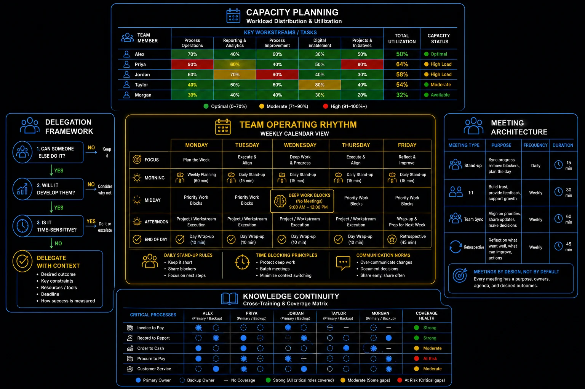

Pillar 7 · Cluster 2
Building and running high-performing GBS teams
Capacity planning, hiring, onboarding, DEI, and remote culture are not HR topics — they are operational levers that determine whether your team can deliver.
Sound familiar?
Topic 01 · Resource Management
Capacity planning and demand forecasting
Without volume forecasts matched to available hours, you are managing by hope. Capacity planning replaces hope with arithmetic. The model is in THE FIX.
Managing by hope
has a failure date.
 M
MQuarter-end approaches. Miguel senses the team is "probably fine."
Then he does the math: forecast volume up 18%, two people on leave, one training week booked.
The "probably fine" is a 340-hour gap, visible six weeks early.
"The crisis was already on the calendar. I just had not multiplied yet."
He feels alarmed — early enough for it to matter.
You feel capacity instead of calculating it — and discover the gap when it becomes overtime.
Capacity planning is simple arithmetic, done ahead of time.
The 340-hour gap becomes a staffing conversation in week one — not an apology in week six.
Capacity planning in depth — the full model
If you do not know how much work is coming and how many people you need, you are managing by hope. Capacity planning replaces hope with data.
- Measure current capacity — total available hours minus leave, training, meetings, and administrative overhead (typically 65-75% of gross hours are productive)
- Forecast demand — use historical volume data, seasonal patterns, and known upcoming events (month-end close, audit seasons, migration waves)
- Identify gaps — where demand exceeds capacity, decide whether to redistribute, cross-train, hire, or push back on scope
- Build buffer — plan for 80-85% utilization, not 100%; teams at full capacity cannot absorb spikes or unexpected work
- Review monthly — capacity plans are living documents; update as actuals deviate from forecast
Capacity planning — workload distribution and utilization
Run the arithmetic for next month: demand hours vs honest supply hours. Put the gap in writing.
Capacity says hire. Interviewing decides who.

GBS team operations blueprint: capacity planning, operating rhythm, delegation, and knowledge continuity
Topic 02 · Talent Acquisition
Behavioral interviewing and selection
Past behavior predicts future performance better than hypotheticals. Structured behavioral interviews beat gut feel — measurably. The model is in THE FIX.
"What would you do if…"
invites fiction.
 P
PTwo candidates. One interviews brilliantly on hypotheticals — polished, confident, fluent.
Peter switches format: "Tell me about a real backlog you cleared. What did you actually do?"
The polish thins. The second candidate — quieter — walks him through a real recovery, step by step, with numbers.
"Hypotheticals audition actors. Examples audition workers."
He feels certain for the first time in an interview room.
You hire the best interview performance and hope it correlates with job performance. It often does not.
Behavioral interviewing runs on one grammar.
The quiet candidate joins — and performs exactly like her examples said she would.
Behavioral interviewing in depth — question bank
Past behavior is the best predictor of future behavior. Structured behavioral interviews reduce bias and predict on-the-job performance better than unstructured conversations.
- Situation — ask the candidate to describe a specific situation (not a hypothetical), including context and constraints
- Task — what was their specific responsibility or objective in that situation
- Action — what did they personally do (not the team), and why did they choose that approach
- Result — what was the measurable outcome, and what did they learn from the experience
- Structured scorecards — evaluate all candidates against the same criteria with the same rubric
- Diverse interview panels — include interviewers from different backgrounds, functions, and seniority levels
- Blind resume screening — remove names, photos, and universities from initial review where possible
- Inclusive job descriptions — avoid gendered language, unnecessary credential requirements, and culture-specific jargon
- Track metrics — monitor pipeline diversity at each stage and investigate where drop-off occurs
Delegation decision tree — can, will, time-sensitive
Rewrite your three favorite interview questions into past tense. "Would you" becomes "did you."
Hired well. Now do not waste them for a month.
Topic 03 · New Starter Integration
Onboarding and knowledge ramp-up
A new hire confused after 30 days signals a bad onboarding process, not a bad hire. Ramp-up is designable. The model is in THE FIX.
Still lost after 30 days?
That is a process failure.
MMiguel’s last new joiner shadowed "whoever had time." Productive after three months, discouraged after two.
For the next one he builds a plan: named buddy, week-by-week skill ladder, first solo task on day 8.
Same role, same systems — productive in five weeks.
"The difference was never the hire. It was the runway."
He feels convinced — design beats hope again.
You onboard by osmosis and then judge the new joiner for the confusion your process created.
Onboarding is a 30-60-90 runway with an owner.
Ramp time drops by half — and the next new joiner’s first review opens with wins, not apologies.
Onboarding and ramp-up in depth
A new hire who is still confused after 30 days is not a bad hire — they are a sign of a bad onboarding process.
- Week 1 — systems access, team introductions, role overview, buddy assignment, first knowledge transfer sessions
- Week 2-4 — shadowing live work, supervised processing, access to SOPs and knowledge base, daily check-ins with buddy
- Month 2 — independent processing of standard cases with quality review, introduction to exception handling, first performance baseline
- Month 3 — full case handling, reduced supervision, first formal feedback session, goal-setting for remainder of probation
- Month 4-6 — increasing complexity and volume, cross-training introduction, milestone review against ramp-up targets
Write the 30-60-90 for your next joiner before they arrive. Name the buddy today.
People ramp up. People also leave — is your process ready?
Topic 04 · Risk Management
Succession planning and single points of failure
If one person leaving would cripple the team, you have a SPOF. Succession planning is risk management, not paperwork. The model is in THE FIX.
One resignation
from a standstill.
 P
PPeter’s intercompany expert resigns. Notice period: one month.
Inventory of what only she knows: the exception logic, the quarter-end quirks, the contacts, the workarounds.
None of it written. All of it leaving.
"We did not lose an employee. We lost an archive."
He feels exposed — one month from operational damage.
You celebrate your experts and never notice they have become your risks.
SPOF management is three moves, run before the resignation.
The month becomes a structured knowledge transfer. Painful — but the next expert’s resignation will be a calendar event, not a crisis.
Succession and SPOF in depth
If one person leaving would cripple your team, you have a succession planning problem. Single Points of Failure are operational risks that need mitigation before they materialize.
- Map critical knowledge — which processes depend on a single person's expertise or system access
- Cross-train proactively — ensure at least two people can perform every critical function
- Document tribal knowledge — SOPs, decision trees, and exception handling guides that capture what lives in people's heads
- Rotate responsibilities — periodic role swaps build versatility and expose hidden dependencies
- Plan for departure — succession plans for key roles should exist before the resignation arrives
Meeting architecture — stand-up, 1:1, team sync, retrospective
Write your SPOF list: tasks only one person can run. Pick the scariest. Start its documentation this week.
Resilient on paper. Culture is what holds it together across cities.
Topic 05 · Distributed Teams
Remote team culture building
Remote culture does not happen by accident — it is designed: structured rituals, explicit norms, consistent follow-through. The model is in THE FIX.
Three cities, one team.
Only if you build it.
Miguel’s team sits in Manila, Cebu, and a scatter of home offices.
He designs what an office gives for free: a daily 15-minute huddle with rotation, a wins channel, cameras-on Fridays, written norms for response times.
Six months in, a new joiner says the unexpected:
"It does not feel like remote work. It feels like a team that happens to be remote."
He feels proud — of architecture nobody can see.
You wait for culture to emerge remotely. Offices grow culture by accident; remote teams only grow it by design.
Remote culture stands on three designed pillars.
The rituals carry the team through a rough quarter — because belonging was built before it was needed.
Remote culture building in depth
Culture does not happen by accident in remote teams. It requires intentional design — structured rituals, clear norms, and consistent follow-through.
- Structured social interaction — virtual coffee chats, team retrospectives, and celebration of wins; organic watercooler moments do not happen online
- Documentation as default — decisions, processes, and context captured in shared spaces so location and time zone do not create information asymmetry
- Inclusive meeting design — rotating meeting times, camera-optional policies for large groups, and asynchronous input channels for those who could not attend
- Recognition rituals — public acknowledgment of contributions in team channels; remote work makes contributions invisible unless deliberately highlighted
- Clear boundaries — respect for working hours across time zones; no expectation of instant response outside agreed availability windows
Pick one ritual and run it for four weeks without exception. Rotation included.
The team is one unit. Cluster 3: now grow each person in it.
- Capacity planning does not need to be precise — it needs to be directionally right. A simple spreadsheet that tracks volume per person, leave calendar, and seasonal peaks will save you more pain than any sophisticated tool nobody updates.
- The most common delegation failure is not assigning work — it is failing to assign decision rights. "Handle this" without clarity on what they can decide on their own creates a boomerang: every question comes back to you.
- If your team meetings feel pointless, it is because they are. Replace status-reading meetings with async updates. Reserve live meetings for decisions, blockers, and problem-solving. Your team will thank you.
Reference
Glossary
Full glossary at the GBS Insider Club Field Guide.
- SHRM — New Employee Onboarding Guide, 2024
- McKinsey — Diversity Wins: How Inclusion Matters, 2023
- Gallup — Remote Work and Hybrid Work Survey, 2025
- SSON — GBS Workforce Trends Report, 2025
Knowing the frameworks is the entry ticket. Applying them — visibly, at your actual job — is what gets you promoted.
The GBS Insider Club Career Paths turn this theory into a guided 90-day program for your role:
- → Self-assessment against your current role level
- → Practical exercises you can apply at your actual job
- → Templates ready to use in your day-to-day
- → Julian's unfiltered practitioner playbook